Research
I developed fast and certifiable motion planning algorithm for rigid bodies using Riemannian geometry and convex optimization.
I also integrate geometry and topology insights into machine learning for intepretable robotics systems.
Honors & Awards
[06/2025] RSS 2025 Outstanding Reviewer Award 🏆
[06/2025] Best Poster Award 🏆, RSS 2025 Equivariant Systems Workshop
[04/2024] Rackham Predoctoral Fellowship
[07/2023] RSS 2023 Best Paper Award Finalist 🏆
[08/2020] University of Michigan Robotics Institute Fellowship
Selected Publications
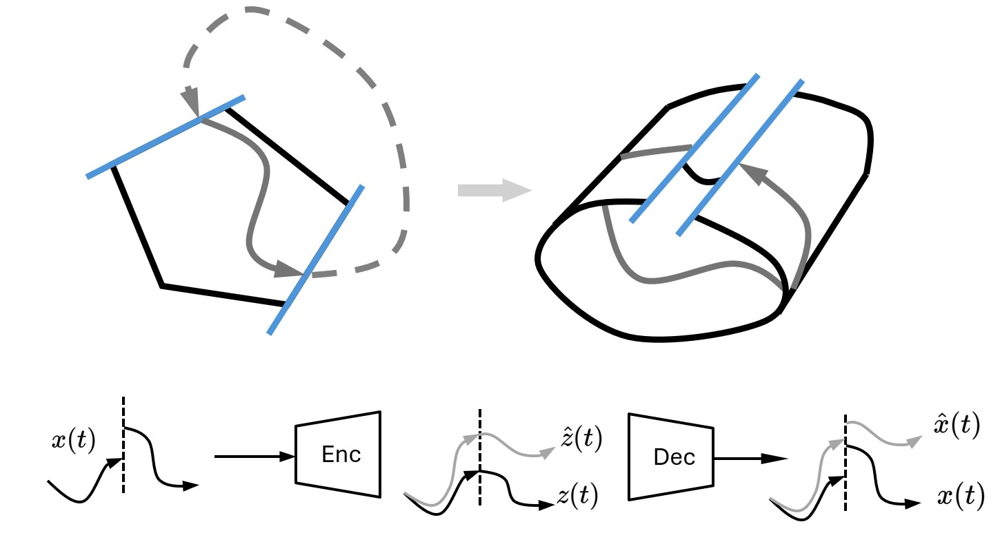
Embedding Hybrid Systems into Continuous Latent Vector Fields Sangli Teng , Hang Liu, Koushil Sreenath
In submission
We proved that hybrid systems can be described by continuous vector fields on manifold embbed in high-dimensional Euclidean spaces.
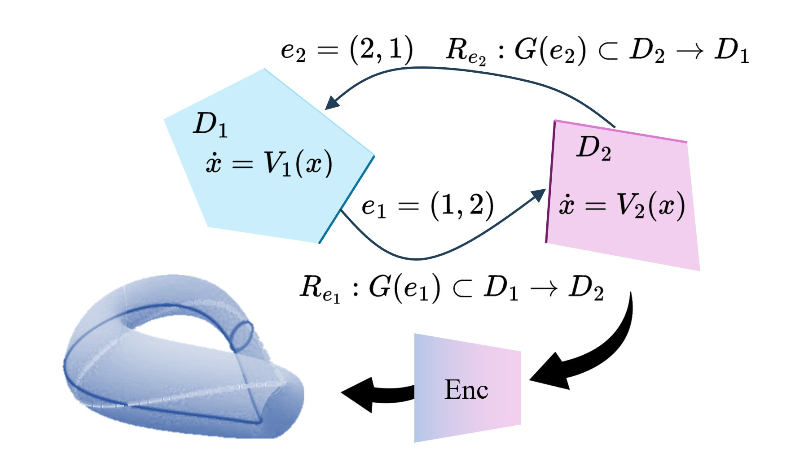
CHyLL: Learning Continuous Neural Representations of Hybrid Systems Sangli Teng , Hang Liu, Jingyu Song, Koushil Sreenath
In submission
Embed hybrid systems into continuous manifold with singularity-free representations. No event functions anymore.
Ego-Vision World Model for Humanoid Contact Planning Sangli Teng , Yufeng Chi, Yakun Sophia Shao, Zhongyu Li, Maani Ghaffari, Koushil Sreenath
In submission
A vision-conditioned world model for humanoid contact-rich motion planning.
Learning Hybrid Dynamics Via Convex Optimizations Sangli Teng , Anthony Bloch, Maani Ghaffari
In submission
Convex optimization-based identification of hybrid dynamical systems.
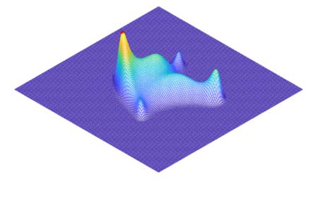
Max Entropy Moment Kalman Filter for Polynomial Systems With Arbitrary Noise Sangli Teng , Harry Zhang, David Jin, Ashkan Jasour, Ram Vasudevan, Maani Ghaffari, Luca Carlone
Advances in Neural Information Processing Systems (NeurIPS) 2025
Best Poster Award, RSS 2025 Equivariant Systems Workshop
Optimal Kalman-type filter for nonlinear non-Gaussian systems.
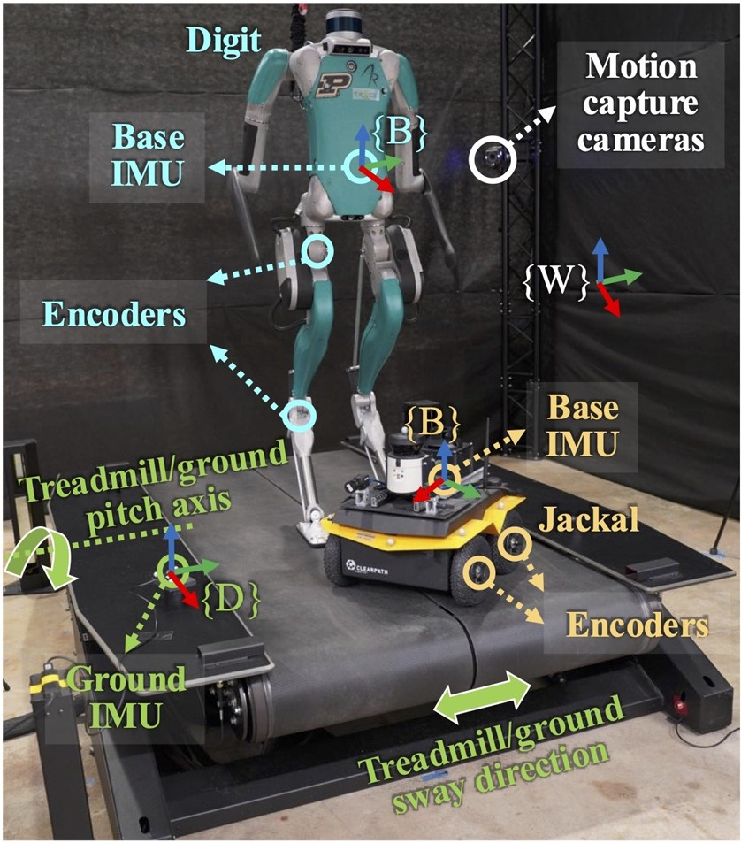
Invariant Filtering for Full-State Estimation of Ground Robots in Non-Inertial Environments Sangli Teng , Tzu-Yuan Lin, Maani Ghaffari, Yan Gu
IEEE/ASME Transactions on Mechatronics , 2025
State estimation for legged robot on moving platforms.
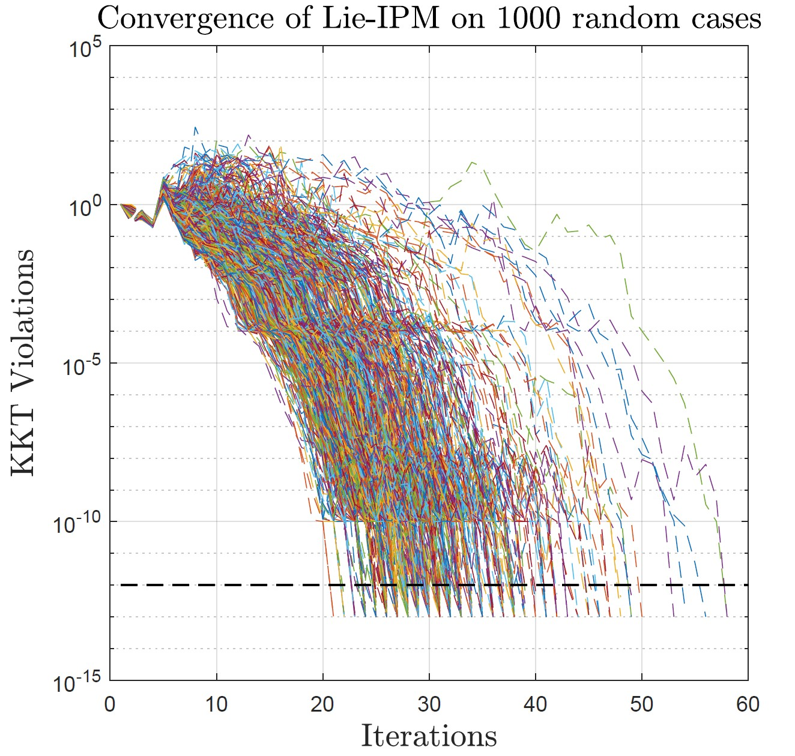
Riemannian Direct Trajectory Optimization of Rigid Bodies on Matrix Lie Groups Sangli Teng , Tzu-Yuan Lin, William A. Clark, Ram Vasudevan, Maani Ghaffari
Robotics: Science and Systems (RSS) , 2025
Constrained singularity-free on-manifold optimization for rigid bodies.
您的浏览器不支持 HTML5 视频。
Discrete-Time Hybrid Automata Learning: Legged Locomotion Meets Skateboarding Sangli Teng , Ben Liu, Wei Zhang, Maani Ghaffari
Robotics: Science and Systems (RSS) , 2025
Learning hybrid systems as the inductive bias for interpretible reinforcement learning.
A Generalized Metriplectic System Via Free Energy and System Identification Via Bilevel Convex Optimization Sangli Teng , Kaito Iwasaki, William Clark, Xihang Yu, Anthony Bloch, Ram Vasudevan, Maani Ghaffari
American Conrol Conference (ACC) , 2025
Bilevel system identification of a symmetric structure for Hamiltonian systems.
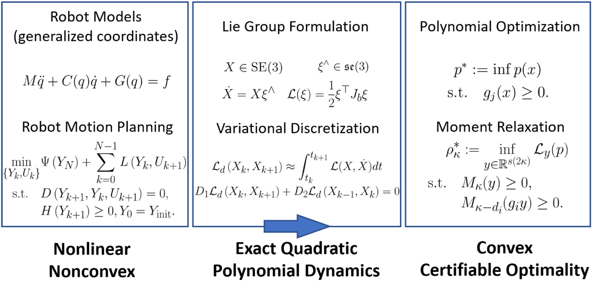
Convex Geometric Motion Planning of Multi-Body Systems on Lie Groups Via Variational Integrators and Sparse Moment Relaxation Sangli Teng , Ashkan Jasour, Ram Vasudevan, Maani Ghaffari
International Journal of Robotics Research (IJRR)
RSS 2023 Best Paper Award Finalist Plan full rigid body motion with verifiable global optimality and feasbility.
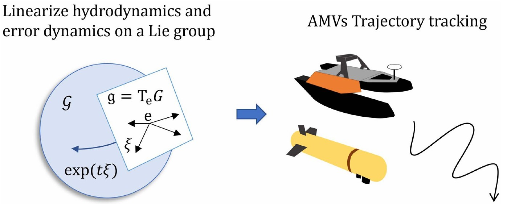
Convex Geometric Trajectory Tracking Using Lie Algebraic MPC for Autonomous Marine Vehicles Sangli Teng , Maani Ghaffari
IEEE Robotics and Automation Letters (RA-L) , 2023
A QP-based MPC for surface vehicle trajectory tracking.
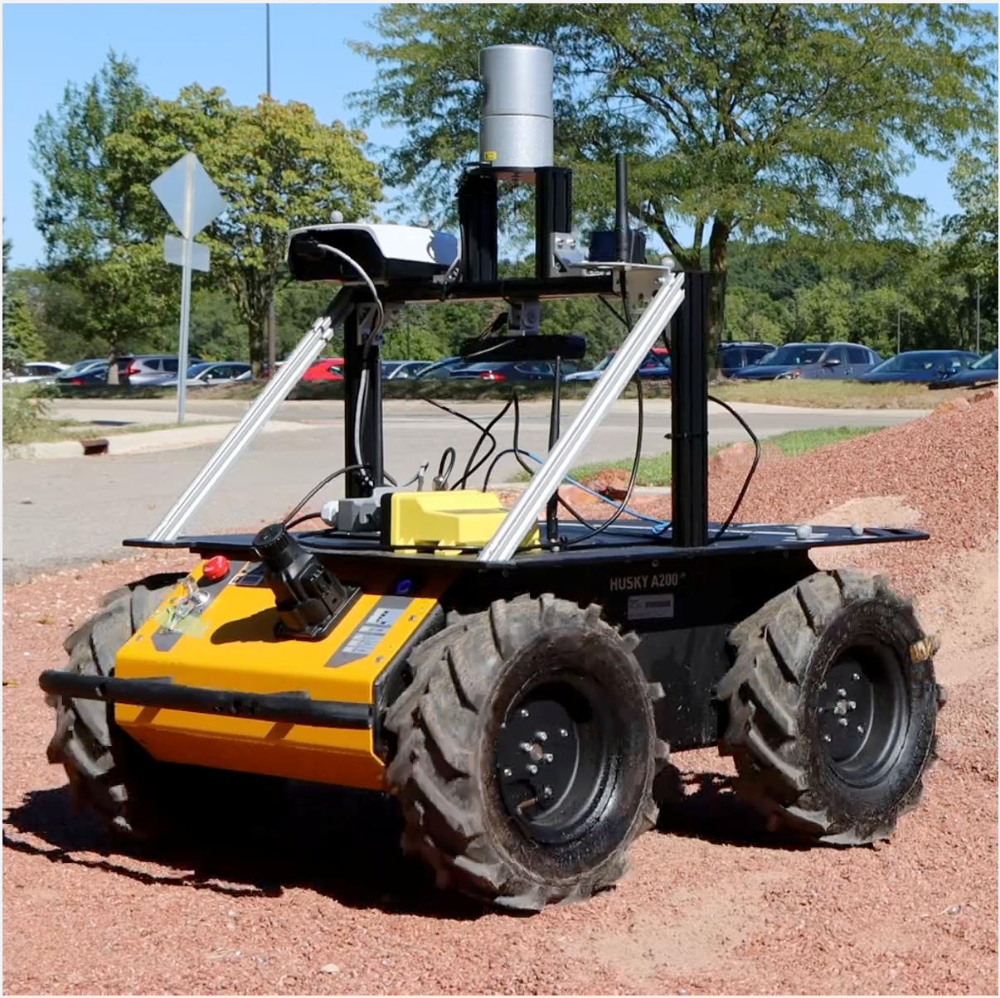
Fully Proprioceptive Slip-Velocity-Aware State Estimation for Mobile Robots Via Invariant Kalman Filtering and Disturbance Observer Sangli Teng , Theodor Chakhachiro, Wenzhe Tong, Tingjun Li, Tzu-Yuan Lin, Sarah Koehler, Manuel Ahumada, Jeffrey M. Walls, Maani Ghaffari
IEEE/RSJ International Conference on Intelligent Robots and Systems (IROS) , 2023
Fuse wheel kinematics and disturbance model for slip detection of ground vehicle.
Input Influence Matrix Design for MIMO Discrete-Time Ultra-Local Model Sangli Teng , Amit K. Sanyal, Ram Vasudevan, Anthony Bloch, Maani Ghaffari
American Control Conference (ACC) , 2022
Model-free tracking control of fully-actuated systems.
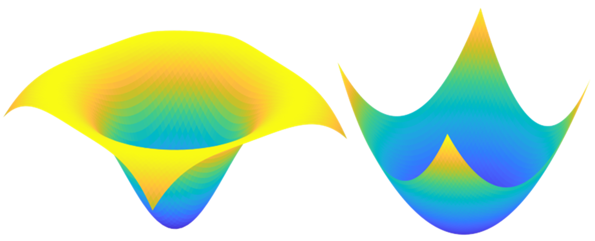
Lie Algebraic Cost Function Design for Control on Lie Groups Sangli Teng , William Clark, Anthony Bloch, Ram Vasudevan, Maani Ghaffari
IEEE Conference on Decision and Control (CDC) , 2022
Geodesic-based symmetry-preserving cost function design on matrix Lie groups.
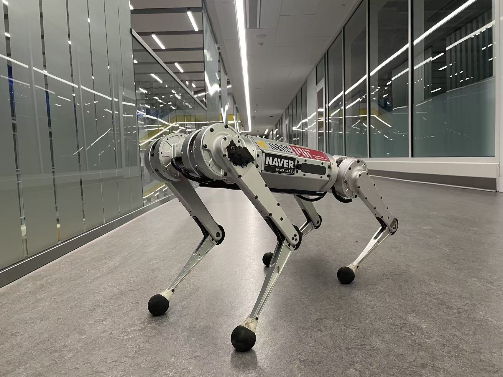
An Error-State Model Predictive Control on Connected Matrix Lie Groups for Legged Robot Control Sangli Teng , Dianhao Chen, William Clark, Maani Ghaffari
IEEE/RSJ International Conference on Intelligent Robots and Systems (IROS) , 2022
Error-state MPC for legged robot trajectory tracking.
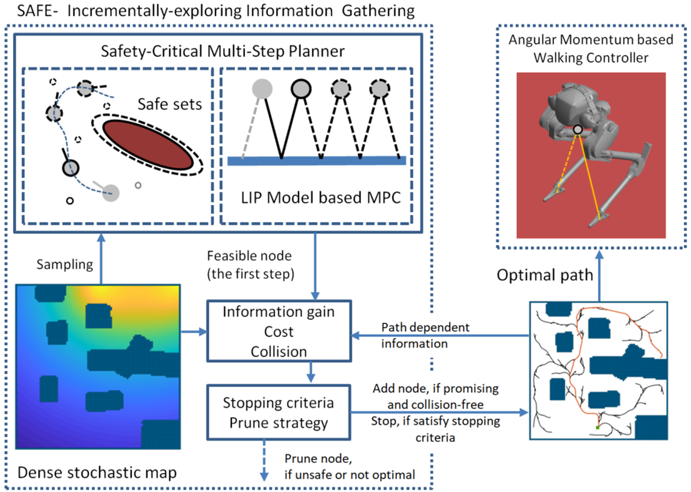
Toward Safety-Aware Informative Motion Planning for Legged Robots Sangli Teng , Yukai Gong, Jessy W. Grizzle, Maani Ghaffari
Combining safety awareness and information gain in motion planning for legged robots.
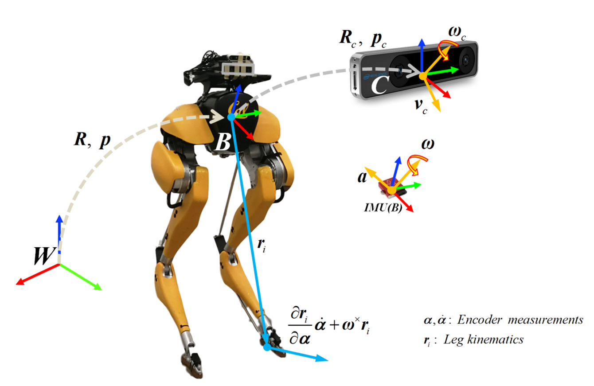
Toward Safety-Aware Informative Motion Planning for Legged Robots Sangli Teng , Mark Wilfried Mueller, Koushil Sreenath
IEEE International Conference on Robotics and Automation (ICRA) , 2021
Fuse vision and kinematics for legged robot state estimation.
Invited Talks
[10/2025] Fast Lab, Zhejiang University
[10/2025] Berkeley Control Seminar, UC Berkeley
[05/2025] Agile Robot Control and Design (ARCAD) Lab, UMich
[05/2025] Vijay Kumar Lab, UPenn
[11/2024] Robotics and Automation System, HKUST-GZ
[11/2024] CLEAR Lab, SUSTech
[09/2024] CleAR Lab, UT Austin
[03/2024] Computational Robotics Group, Harvard
[09/2023] Hybrid Robotics Lab, UC Berkeley
{kind=link}